原文连接:https://www.cnblogs.com/lixinjie/p/spring-tx-playing-a-joke-with-interviewer.html
PS：文章内容涉及源码，请耐心阅读。
理论实践，相辅相成
伟大领袖毛主席告诉我们实践出真知。这是无比正确的。但是也会很辛苦。
就像淘金一样，从大量沙子中淘出金子一定是一个无比艰辛的过程。但如果真能淘出来，也一定是像金子一样宝贵的东西。
他老人家还说过，当真知上升为理论的时候，就可以反过来指导实践了。
在当下这个时代，前辈们已经发现和整理了很多理论，我们直接拿来使用就行了。“拿来主义”不全是不好的。
如果说阅读源码算一种实践的话，那我们拿什么“理论”来指导它呢？
兵马未动，粮草先行
答案自然是官方文档。官方文档就是前辈们总结出来的“理论”，一般来说包含三方面的内容：
a）哲学方面：一些设计思想，比如初衷啊、灵感来源啊这些。一些取舍的选择，比如主要是为了克服什么痛点、解决什么问题。
b）详细解说：把整体内容一点一点的讲清楚，包括很多名字解释，很多设计原理，还有很多注意事项等。
c）入门示例：一些简单的常规使用例子。
下面我们就来熟悉下这些“理论”的关键部分：
事务的执行是和线程相关的，那是不是就要使用ThreadLocal来存储一些相关东西，究竟会存储哪些东西呢。
物理事务就是到数据库的一个物理链接，这个链接一开始是如何建立，建立好后又是如何保存起来呢。
逻辑事务就是一个带有事务注解的方法，它需要关联到一个物理事务上。那它是不是先从当前上下文寻找物理事务，找到就用，否则就新开一个物理事务呢。
多个逻辑事务可以映射到一个物理事务上，逻辑事务是各自提交的，如何处理逻辑事务提交和物理事务提交间的关系呢，至少所有的逻辑事务都提交了才可以提交物理事务。
获取事务时的参数叫事务定义，是一个接口，那它的实现类是哪个，都会包含哪些内容呀，至少要包含事务注解里指定的内容吧。
获取事务时的结果叫事务状态，是一个接口，那它的实现类是哪个，都会包含哪些内容呀。
获取事务这个方法是非常核心的方法，入参和出参分别是事务定义和事务状态。你会不会感到有些奇怪，获取事务的结果不应该是一个事务吗，为啥却是一个事务状态呢？到底有没有一个类和事务这两个字对应呢？
多个逻辑事务也可以映射到多个物理事务上，此时就会遇到在当下已存在物理事务的时候再开启新的物理事务。那么就需要将当下事务挂起，具体的挂起会执行哪些操作呢。
挂起的事务会存到那里呢，在新的物理事务提交完毕后又如何将挂起的事务恢复呢。
以上这些问题在你多次阅读文档和思考后会自动出现的，那我们就带着这些问题去源码中寻找答案。
冥冥之中，早已注定
就像上篇文章中说的，源码阅读找到入口点非常重要。这里的入口点自然就是事务管理器了。如下图：
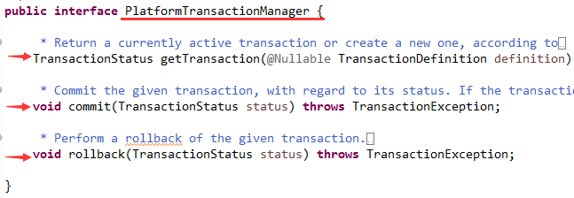
这个接口很重要但却非常简单，就三个方法，获取事务/提交/回滚。但它的实现却相对比较复杂，也让我们认识到，接口的定义是一个抽象的事情，可以不用考虑实现。
它的一个抽象实现类就是AbstractPlatformTransactionManager，这个类实现了事务管理的整个逻辑关系流程，但是把涉及和具体事务打交道的东西又定义为抽象方法让子类去实现。
那么对应于单个数据库事务的具体实现类就是DataSourceTransactionManager，这个类会完成这些和事务相关的具体的操作。
获取事务方法的整体执行流程如下：
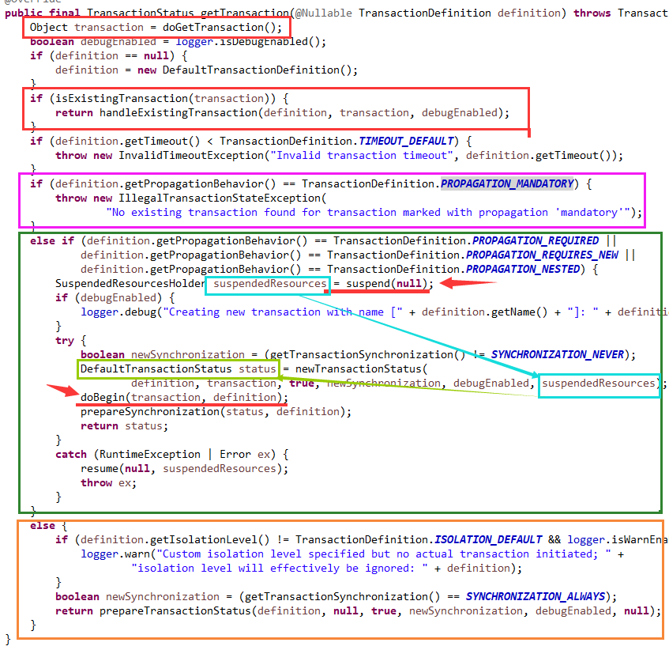
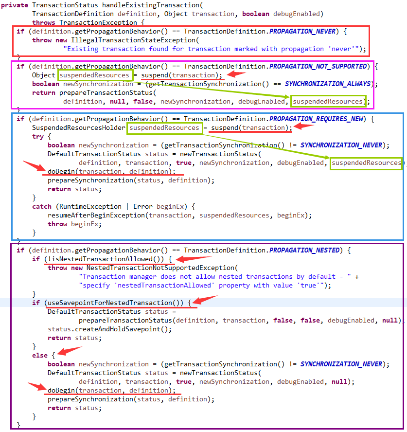
1、调用doGetTransaction()方法从当前上下文中获取事务对象transaction。
2、如果事务已经存在：
2.1、如果此时事务传播特性是NEVER，则抛出异常。
2.2、如果此时事务的传播特性是NOT_SUPPORTED，则调用suspend(transaction)挂起当前事务，将被挂起的资源suspendedResources放入事务状态里。
2.3、如果此时事务状态是REQUIRES_NEW，则调用suspend(transaction)挂起当前事务，将事务对象transaction和被挂起的资源suspendedResources放入事务状态里。然后调用doBegin(transaction, definition)方法去真正打开事务。最后调用prepareSynchronization(status, definition)方法准备一下事务同步。
2.4、如果此时事务的传播特性是NESTED，又分三种情况：
2.4.1、如果不允许嵌套事务，直接抛出异常。
2.4.2、如果使用保存点（Savepoint）来实现嵌套事务，那直接使用当前事务，创建一个保存点就可以了。
2.4.3、如果使用新的事务来实现嵌套事务，那就调用doBegin(transaction, definition)开启新的事务，此时不需要挂起当前事务。
2.5、对于剩下三种传播特性REQUIRED/MANDATORY/SUPPORTS，则不需要创建新事务，直接使用当前事务就可以了。
3、如果事务不存在：
3.1、如果此时事务的传播特性是MANDATORY，则会抛出异常。
3.2、如果此时事务的传播特性是REQUIRED/REQUIRES_NEW/NESTED，则调用suspend(null)挂起当前事务，将事务对象transaction和被挂起的资源suspendedResources都放入事务状态里。然后调用doBegin(transaction, definition)方法去真正打开事务。最后调用prepareSynchronization(status, definition)方法准备一下事务同步。
3.3、对于剩下的三种传播特性SUPPORTS/NOT_SUPPORTED/NEVER，则不需要操作事务。
获取事务对象的方法如下图：
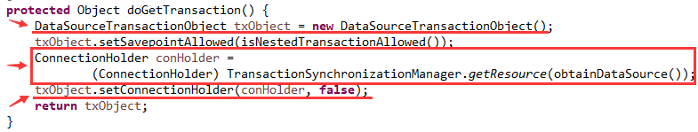
一共有三个关注点：
1、事务对象，即和事务这两个字对应的那个类。DataSourceTransactionObject从类名来看就是采用数据源实现的事务对象。下面是它的字段：
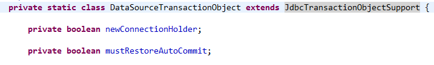
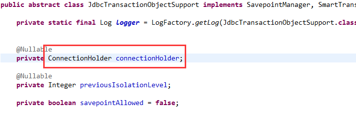
可以看到这个事务对象最主要的作用就是保存了一个ConnectionHolder对象。
2、使用DataSource对象获取一个ConnectionHolder对象，从哪里获取呢？自然是当前执行的上下文，即ThreadLocal里了。如下图：
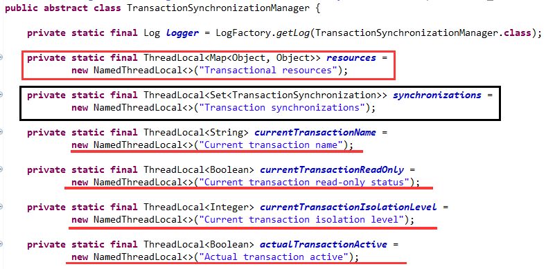
此图中有三点需要注意：
2.1、事务性资源是存储在Map<Object, Object>里，key就是DataSource对象，value就是ConnectionHolder对象。
2.2、事务同步这个集合Set<TransactionSynchronization>（图中黑色线框那个）只有在多个数据源的分布式事务时才使用。
2.3、剩下的是四个和事务相关的变量，事务名称/是否只读/隔离级别/是否激活。
3、将上一步获取的ConnectionHolder对象（也可能是null）放入事务对象中。
请看ConnectionHolder的定义，如下图：
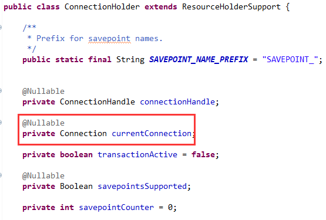
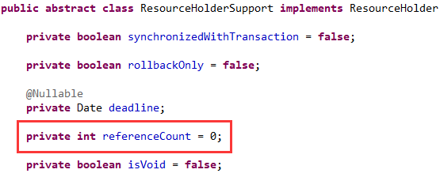
主要关注两点：
一是它包含一个数据库链接（Connection），因此可以认为它就是表示一个物理事务。
二是它包含一个引用计数（referenceCount），来指示它被引用次数，表示当前有多少个逻辑事务关联到它（在单数据源时并没有使用该字段）。
接着是判断一个事务是否已存在，如下图：
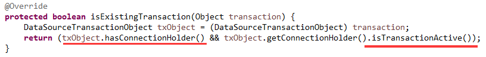
即事务对象要关联到一个物理事务（即有一个ConnectionHolder对象），同时物理事务还必须是活动的。
那么在首次执行时，事务肯定是不存在的，因为从线程的ThreadLocal里没有取出ConnectionHolder对象。那就新开一个事务呗，不过首先要看一下如何挂起一个事务。
挂起事务，如下图：
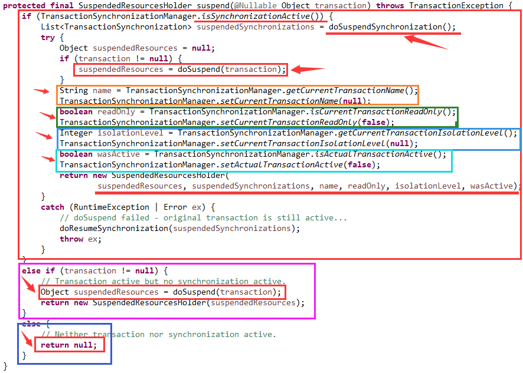
分三种情况：
1、事务同步是活动的，即物理事务已经被绑定到线程：
1.1、doSuspendSynchronization()方法返回的List是空的（多数据源分布式事务时才不为空）
1.2、doSuspend(transaction)去挂起当前事务。
1.3、从ThreadLocal里取出值，并同时清空ThreadLocal。
1.4、将这些值保存在SuspendedResourcesHolder类中，表示这些都是被挂起的资源。
2、物理事务是活动的，但是还没有绑定到线程，此时只需挂起事务就行了。
3、没有物理事务，什么都不做，返回null即可。
具体的挂起事务操作，请看下图：
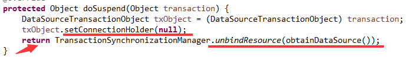
包括两步：
1、将（逻辑）事务对象中关联的物理事务ConnectionHolder清空。
2、在线程的ThreadLocal里的Map<Object, Object>中删除这对DataSource->ConnectionHolder的映射。同时将ConnectionHolder返回。
这个被返回的ConnectionHolder（物理事务），就是上一张图片中被挂起的资源suspendedResources。
下面是开启一个新的物理事务，如图：
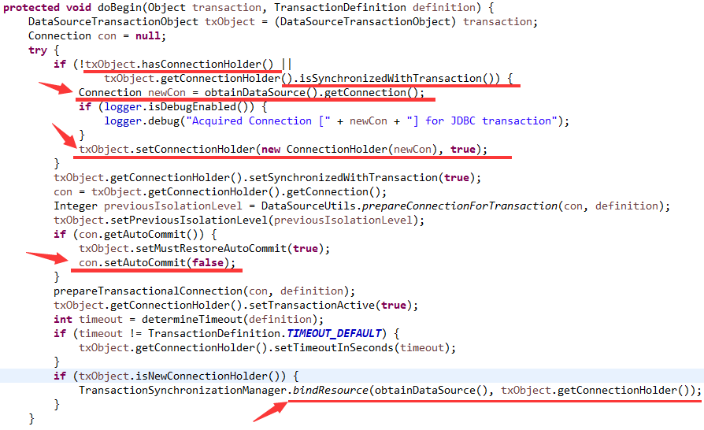
主要包括以下内容：
如果逻辑事务没有和一个物理资源相关联，或这个物理资源还没有和一个事务同步，此时新建一个数据库链接，并把这个链接包装到一个ConnectionHolder里。并设置给事务对象。
接下来将这个物理资源ConnectionHolder标记为已同步一个事务。然后将数据库链接设置为非自动提交。最后把DataSource和ConnectionHolder绑定到当前线程。
一个事务获取后，返回的结果是一个事务状态，如下图：
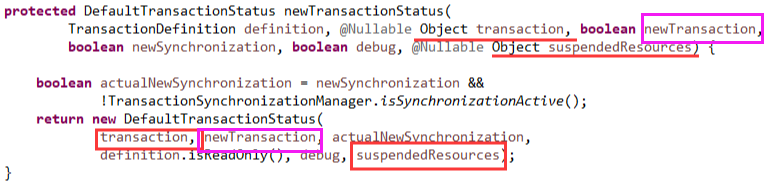
很重要的三点：
一是它包含了逻辑事务对象（已关联了物理事务）。
二是需要表明这个事务是一个新开启的物理事务，还是参与到已有的物理事务。
三是它包含了被挂起的（上一个）物理事务对象（如果有的话）。
下面请看事务提交方法：
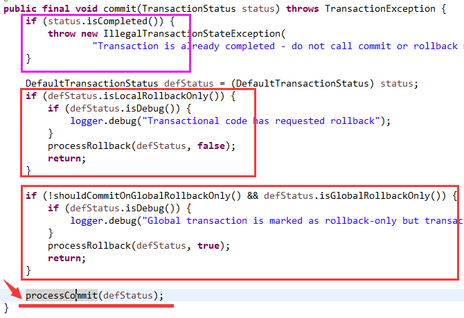
主要包括四部分：
1、如果事务已完成则抛出异常。
2、主动回滚。
3、被动回滚，因为全局范围被设置了回滚。
4、进入提交事务。
下面是提交逻辑：
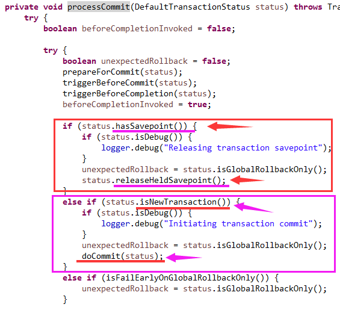
主要关注两点：
1、如果创建了保存点，就将其释放掉，因为现在已经在提交流程中，保存点已经没有用了。
2、只有当前的逻辑事务新打开了物理事务时才提交。只是参与到已存在的物理事务中时不提交（因为这个物理事务还对应了其它没有执行完的逻辑事务）。
下面是具体的事务提交：
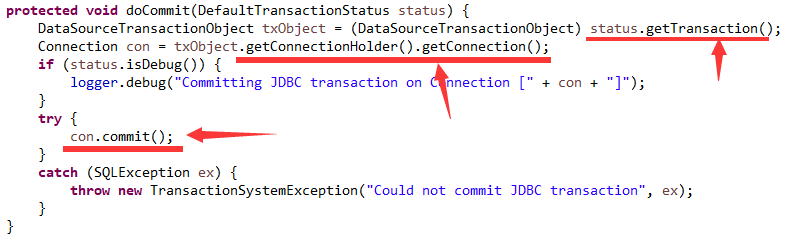
从事务状态中获取保存的逻辑事务对象，再获取它关联的物理事务，再获取关联的数据库链接，最后执行commit操作。
下面请看回滚方法：
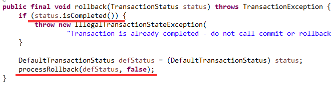
如果事务已完成则抛出异常，否则执行回滚。
下面是回滚逻辑：
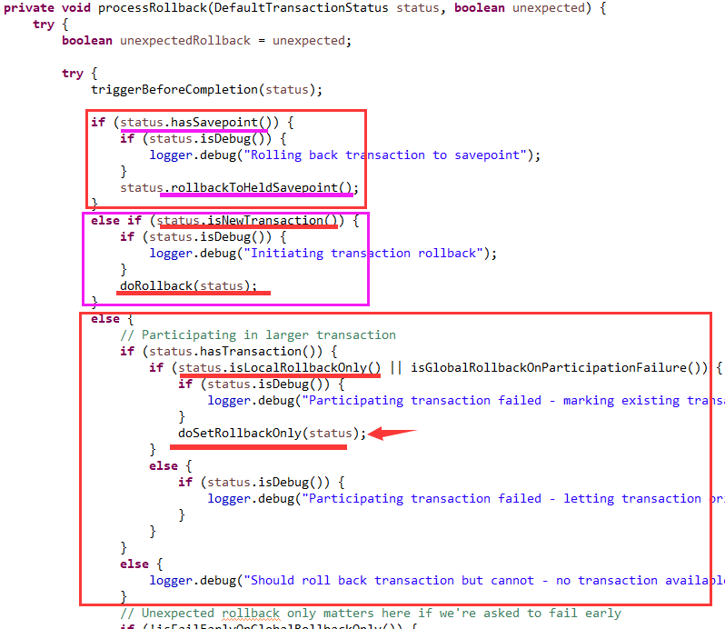
1、如果有保存点的回滚到保存点。
2、如果是新开的物理事务，则进行回滚。
3、若是参与到已有的事务中，只能标记为回滚。
具体的执行回滚和标记回滚请看下图：
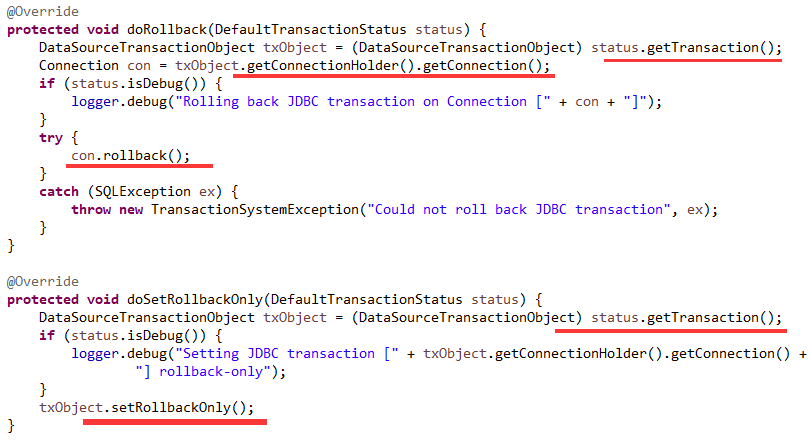
无论是提交还是回滚，都表示一个事务的完成。如果它之前有挂起的事务，则需要进行恢复。如下图：
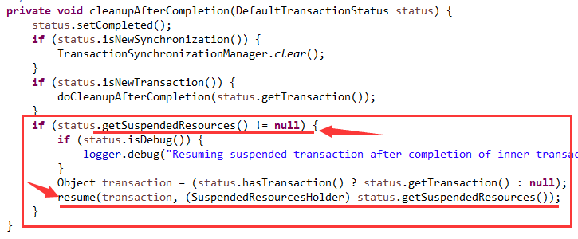
下面时事务恢复逻辑:
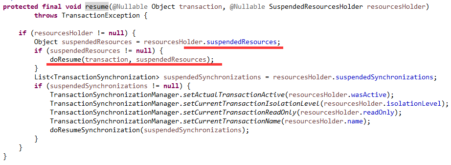
其中被挂起的资源就是ConnectionHolder对象。
具体恢复操作如下图：
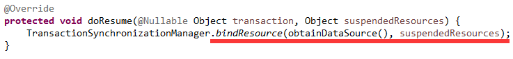
把DataSource->ConnectionHolder重新绑定到线程的ThreadLocal里的Map<Object, Object>中。
PS：能认真看到这里的，都是有耐心和爱学习的人，你一定会有所收获的。
（END）
作者是工作超过10年的码农，现在任架构师。喜欢研究技术，崇尚简单快乐。追求以通俗易懂的语言解说技术，希望所有的读者都能看懂并记住。下面是公众号和知识星球的二维码，欢迎关注！